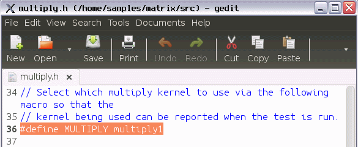
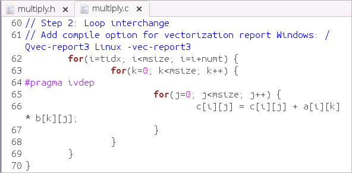
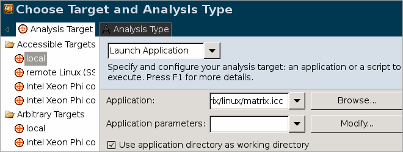

In the
Source pane, you identified that in the
multiply1
function the code line 51 resulted in the highest values for the Clockticks
event. To solve this issue, do the following:
In the
Source pane, you identified that in the
multiply1
function the code line 51 resulted in the highest values for the Clockticks
event. To solve this issue, do the following:
Change Algorithm
Note
The proposed solution is one of the multiple ways to optimize the memory access and is used for demonstration purposes only.
Open the multiply.h file from the sample code directory (for example, /home/sample/matrix/src).
For this sample, the multiply.h file is used to define the functions used in the multiply.c file.

In line 36, replace the multiply1 function name with the multiply2 function.
This new function uses the loop interchange mechanism that optimizes the memory access in the code.

Intel compiler helps vectorize the data, which means that it uses SIMD instructions that can work with several data elements simultaneously. If only one source file is used, the Intel compiler enables vectorization automatically. The current sample uses several source files, that is why the multiply2 function uses #pragma ivdep to instruct the compiler to ignore assumed vector dependencies. This information lets the compiler enable the Supplemental Streaming SIMD Extensions (SSSE).
Save files and rebuild the project using the compiler of your choice.
Run Intel C++ Compiler from the code sample directory (for example: /home/sample/matrix/linux) as follows:
make icc
The matrix application is automatically built with the Intel compiler (as matrix.icc) and stored in the matrix/linux directory.
Verify Optimization
From the VTune Amplifier toolbar, click the
 Configure Project... button.
Configure Project... button.
The Choose Target and Analysis Type window opens with the Analysis Target tab active. Make sure the local target system and Launch Application target type are selected.
In the Application field, click the Browse... button and navigate to the updated matrix application.

Click OK to close the dialog box.
Re-run the General Exploration analysis: From the Analysis Type tab, select Microarchitecture Analysis> General Exploration.
VTune Amplifier reruns the General Exploration analysis for the updated matrix target and creates a new result, r001ge, that opens automatically.
In the r001ge result, click the Summary tab to see the Elapsed time value for the optimized code:

You see that the Elapsed time has reduced from 140.218 seconds to 10.032 seconds. CPI Rate and LLC Miss is still an issue though has reduced significantly.
Key Terms
Next Step
Optimization Notice |
|---|
Intel's compilers may or may not optimize to the same degree for non-Intel microprocessors for optimizations that are not unique to Intel microprocessors. These optimizations include SSE2, SSE3, and SSSE3 instruction sets and other optimizations. Intel does not guarantee the availability, functionality, or effectiveness of any optimization on microprocessors not manufactured by Intel. Microprocessor-dependent optimizations in this product are intended for use with Intel microprocessors. Certain optimizations not specific to Intel microarchitecture are reserved for Intel microprocessors. Please refer to the applicable product User and Reference Guides for more information regarding the specific instruction sets covered by this notice. Notice revision #20110804 |